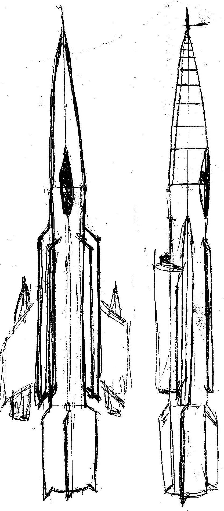
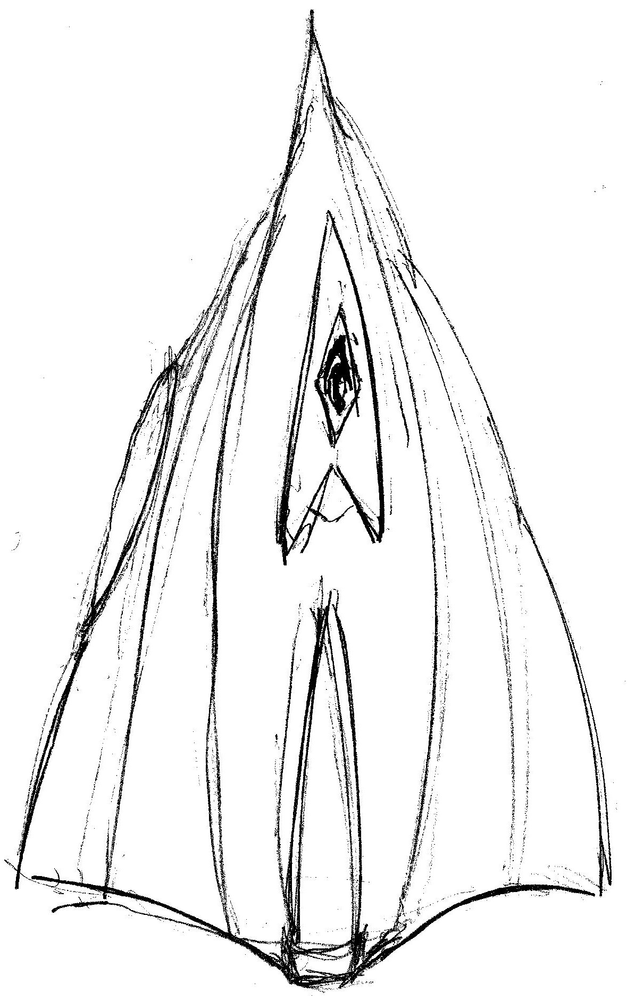

Date: October 2015

Aircraft 

Date: October 2015
Date: October 2015
Aircraft
Date: October 2015
I think it cannot be like real product for market, but researches from this we may take.
This project combine of eagle and peregrine falcon. I want to see in human things nature because evolution more other than every human moment-thought. I want to make something, that similar with nature.
I create some of mechanism that may be similar with real animal, but it is only conceptual idea and I need to test it on practice with some items. Here may be some of new aspects like action in wings.
I want to make them more similar with reality. I am watching to the best materials to create adaptive revetment of an aircraft {I see in Net information about Massachusetts researching, but I cannot find official document to study it}.
I start my own researching about bird wings. Birds wave wings and I would not want to stop thinking about it. I want to find this result and try to combine it with simple aircraft. It is interesting thing because we will not use some kind of fuel by it.
May be wind power that could generate power by waving of different parts of wings. At the start of concept, I watch to three parts in one wing.
I want to make some beautiful skin of plane because aerodynamics have sense in design. I watch to the fastest planes that human have done before.
I could not imagine how much might it cost.
I want to make small prototype to make practice on it and this may be 50 000 – 620 000 $.
I did not it before and I cannot do better calculations at this moment but I may calculate hours, materials and technical process.
I think that for small prototype I need about 63 weeks.
My intuition think that it will be:
Cost: 65 000 – 868 000 $
Time: 80-100 weeks
It is interest at least, I think bird's evolution know more about flying.
There are small description about my project, I cannot show all in WorldWideWeb at the moment